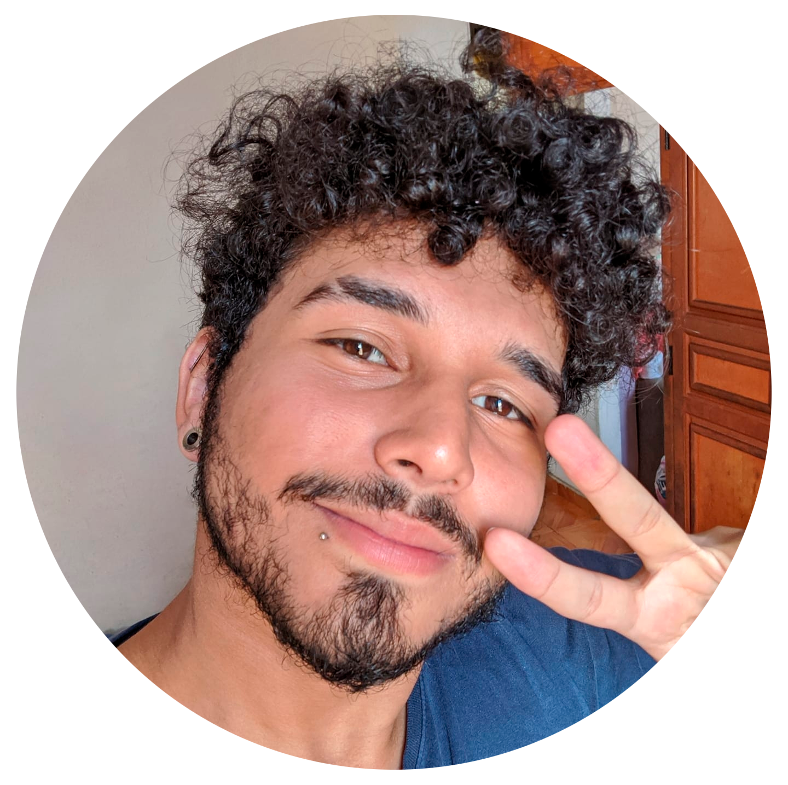

Caio de Souza
tenho 22 anos, sou formado em Design Gráfico, no momento estou cursando uma faculdade nessa mesma área. Morei até meus 21 anos em Realengo porém
rencentemente me mudei para Campo Grande, estudei na FAETEC de Marechal Hermes de 2012 até 2019. Espero conseguir desenvolver minhas habilidades
nesta nova área na qual estou entrando. E com isso podendo juntar com meus conhecimentos na area de Design Gráfico, assim conseguindo unir ambas.
